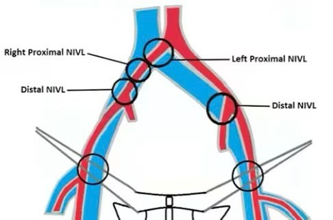

Andrii Mikhalov, dossier médical
English
Українська
Русский
Deutsch
Türkçe
Français
Български
Polski
☰ Menu
⬇ DICOM téléchargements
Résumé
Ce que je demande
Chronologie
Diagnostic
Symptômes et plaintes
Examens et imagerie
Nez et sinus
Documents
Résolution 1079
Lettres
Contact
← Retour
Lettres
Lettres à des cliniques, des autorités et des médecins. Les plus récentes d'abord.
2026-11-24 Conseil des ministres d'Ukraine: Demande d'information publique sur l'application de la résolution n° 1079 du Conseil des ministres
2026-11-24 Ministère de la Santé d'Ukraine: Demande d'information publique sur l'application de la résolution n° 1079 du Conseil des ministres
2026-11-23 Hôpital municipal 10 d'Odessa: Demande de A. Mikhaliov du 22.11.2026 (avec annexes)
2026-11-23 Ministère de la Santé d'Ukraine: Copie de la demande de A. Mikhaliov du 22.11.2026
2026-11-23 Administration militaire régionale d'Odessa, département de la santé: Copie de la demande du 22.11.2026 (complément à la demande du 17.11.2026)
2026-11-23 Médiateur d'Ukraine: Re : Copie de la demande du 21.11.2026 à l'Université nationale de médecine d'Odessa
2026-11-22 Université nationale de médecine d'Odessa: Re : Demande d'examen de la phlébographie et d'aide pour la planification du stenting et les documents
2026-11-22 Université nationale de médecine d'Odessa: Re : Demande de transmission d'une demande à un professeur et de recommandation d'un spécialiste vasculaire à Odessa
2026-11-22 Conseil régional d'Odessa: Copie de la demande du 22.11.2026 (pour le président de la commission)
2026-11-21 Université nationale de médecine d'Odessa: Demande d'examen de la phlébographie et d'aide pour la planification du stenting et les documents
2026-11-21 Hôpital Sofiamed, Bulgarie: Re : Complément à ma demande du 16 novembre : traitement de la veine iliaque sous IVUS
2026-11-21 Clinique Feofania: Re : Complément à la demande du 18.11.2026
2026-11-21 Clinique Medikom: Demande de transmission d'un complément à un médecin
2026-11-21 Institut national de chirurgie Shalimov: Demande de transmission d'un complément à un médecin
2026-11-21 Administration militaire régionale d'Odessa, département de la santé: Re : Demande d'organisation de soins médicaux et d'examen de mon dossier au titre de la résolution n° 1079
2026-11-21 Université nationale de médecine d'Odessa: Demande de transmission d'une demande à un professeur et de recommandation d'un spécialiste vasculaire à Odessa
2026-11-21 Ministère de la Santé d'Ukraine: Copie de la demande du 21.11.2026 à l'Université nationale de médecine d'Odessa
2026-11-21 Médiateur d'Ukraine: Copie de la demande du 21.11.2026 à l'Université nationale de médecine d'Odessa
2026-11-21 Université nationale de médecine d'Odessa: Demande de transmission d'une demande à un professeur et de recommandation d'un spécialiste vasculaire à Odessa
2026-11-21 Ministère de la Santé d'Ukraine: Re : Copie de la demande du 21.11.2026 à l'Université nationale de médecine d'Odessa
2026-11-20 Klinikum Hochsauerland, Allemagne: Re : Examen à distance : stenting de la veine iliaque sous IVUS et aide financière
2026-11-20 Radiologie, Medizin Campus, Allemagne: Demande de traitement : syndrome de May-Thurner, stenting de la veine iliaque sous IVUS (patient d'Ukraine)
2026-11-20 Venaziel, Allemagne: Demande de traitement : syndrome de May-Thurner, stenting de la veine iliaque sous IVUS (patient d'Ukraine)
2026-11-20 Clinique Feofania: Complément à la demande du 18.11.2026
2026-11-20 Hôpital Sofiamed, Bulgarie: Complément à ma demande du 16 novembre : traitement de la veine iliaque sous IVUS
2026-11-18 Clinique privée, Suisse: Re : Coût du stenting sous IVUS et possibilité d'aide financière
2026-11-18 Hôpital Eskulap, Pologne: Re : Examen à distance : stenting de la veine iliaque gauche sous IVUS
2026-11-18 Hôpital Sofiamed, Bulgarie: Relance : examen à distance du traitement de la veine iliaque sous IVUS
2026-11-18 Verum Medical: Stenting de la veine iliaque sous IVUS pour le syndrome de May-Thurner
2026-11-18 Clinique Feofania: Demande de transmission d'une demande à un médecin
2026-11-17 Hôpital universitaire de Zurich: [EXTERN] Re : Images IRM, hôpital universitaire de Zurich
2026-11-17 Klinikum Hochsauerland, Allemagne: Examen à distance : stenting de la veine iliaque sous IVUS et aide financière
2026-11-17 Angiologie, hôpital universitaire de Leipzig: Examen à distance : stenting de la veine iliaque sous IVUS et aide financière
2026-11-17 Hôpital universitaire de Zurich: Re : [EXTERN] Re : Images IRM, hôpital universitaire de Zurich
2026-11-17 Administration militaire régionale d'Odessa, département de la santé: Demande d'organisation de soins médicaux et d'examen de mon dossier au titre de la résolution n° 1079
2026-11-16 Clinique privée, Suisse: Coût du stenting sous IVUS et possibilité d'aide financière
2026-11-16 Clinique Virtus, Kyiv: Consultation sur le syndrome de May-Thurner (demande de transmission à un chirurgien)
2026-11-16 Hôpital Eskulap, Pologne: Examen à distance : stenting de la veine iliaque gauche sous IVUS
2026-11-06 Ministère de la Défense d'Ukraine: Demande de report et de garanties de sécurité pendant la commission médicale militaire
← Retour